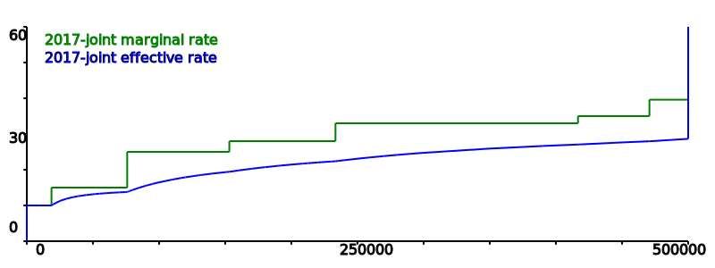

The typical tax rate plan in the US is based on three or more tax brackets where there is a flat rate for a range of incomes and then a sudden jump to the next step. In 2017 the married filing jointly plan had seven brackets ranging from 10% on the first $10,000 to 39.6% on any income beyond $470,700.
This plan has seven rates and six points where the rates change. This means when the politicians want to make changes there are thirteen numbers to consider. Usually this means that at some points along the income curve there are winners who will be getting a lower rate, while at others there will be losers paying a new higher tax.
The usually proposed alternative plan is a flat tax with a single tax rate that applies to all income levels. This is not without its own problems. Set the rate to high, and those at lower income levels, who can least afford it, can find their taxes go up dramatically. But set it too low, and suddenly revenue from taxes falls too low to allow government to work.
Introducing a new plan, the Slanted tax. There are only three numbers for the politicians to worry about. The low tax rate charged if there is no taxable income, the rate on the zeroth dollar. The high tax rate when the slanting tax stops rising and becomes a flat tax for any more income beyond the inflextion point. And finally the inflection point itself. The examples given in the next section with a top marginal rate of 38%, 41% and 44% with inflection points from $250,000 to $300,000 are chosen because the math is simple and should not be considered the suggested rates.

One attempt to make sure the rich paid their fair share was the Alternative Minimum Tax. Unfortunately it was not indexed to inflation so several decades later the threshold to trigger the AMT that was originally set to only catch the top earners now hits a much larger portion of the population and dips close to the middle class.
To prevent a repeat of the mistake of the AMT, the Slanted Tax will be indexed to inflation so each year the inflection point will rise automatically. The rate of rise should be calculated so roughly the same percentage of the population, probably the top 2% to 5% of earners, will be beyond the inflection point. So if a tax payer's income rises with inflation then the tax rate paid should remain the same because each earned dollar will be taxed less along the way to balance out. Those on a fixed income will find their tax burden drops as inlfation pushes the inflextion point away and lowers the slope of the tax rate.